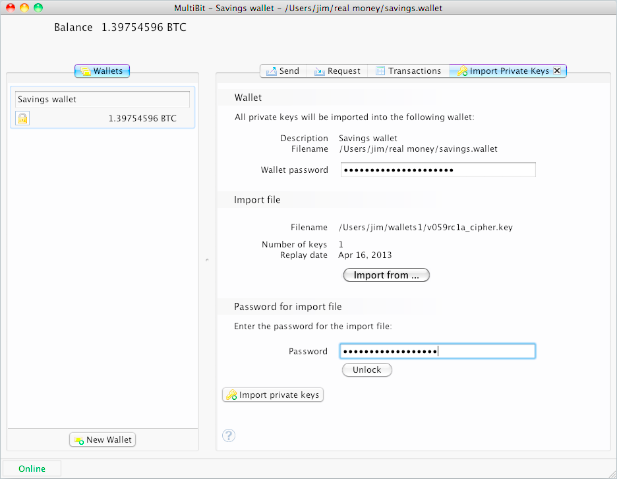

In the ' Wallets'
side panel choose the wallet you want to import the private keys into.
Wallets'
side panel choose the wallet you want to import the private keys into.
Select the menu option 'Tools |  Import
Private Keys'. The '
Import
Private Keys'. The ' Import Private Keys' screen appears.
Import Private Keys' screen appears.
Here is a screenshot:

Choose the private key file to import by clicking on the 'Import from. . .' button. A file chooser opens and you can select the file you want to import.
If the import file is not password protected, the file is read and the number of keys and replay date for the file are shown. If the file is password protected, enter the password in the 'Password' field and press 'Unlock' to see the same information.
To import the private keys to the wallet specified, click on the button ' Import
private keys'. When the import of the private key file is successful a message appears.
Import
private keys'. When the import of the private key file is successful a message appears.
If the import of the private key file fails for any reason the error message is given on screen.
After the import, MultiMona then replays the blockchain from the replay date to find the transactions for the new private keys. It is best just to leave MultiMona to sync the blockchain on its own.